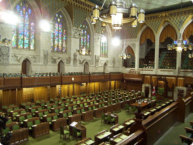
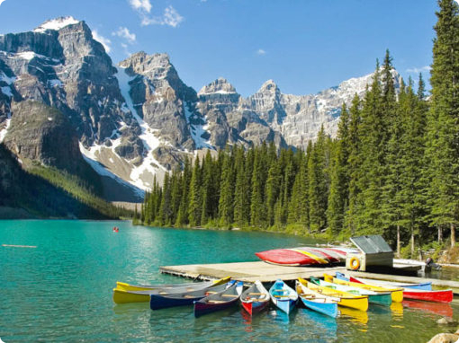

Conhecendo o Canadá em detalhes

História
-
Povos originários
As Primeiras Nações, os Inuit já viviam no território e os Métis se estabeleceram mais tarde.
-
Chegada dos europeus
Jacques Cartier reivindica a região para a França em 1534, e Samuel de Champlain funda a cidade de Quebec em 1608.
-
Domínio britânico
Em 1759, a Batalha das Planícies de Abraão leva ao controle britânico da região.
-
Confederação
Em 1867, nasce o Canadá moderno, com poucas províncias, e o país cresce depois.
-
Marcos recentes
Bandeira da folha de bordo (1965) e criação de Nunavut (1999).

Características
-
Governo
Monarquia constitucional e democracia parlamentar.
-
Línguas e Sociedade
Inglês e francês são as línguas oficiais, e a imigração faz do país um dos mais diversos do mundo.
-
Províncias e territórios
10 províncias e 3 territórios.

Localização
O Canadá é um país localizado na América do Norte, conhecido por sua vasta paisagem natural e diversidade cultural.
Curiosidades
-
Costa e lagos
Maior costa do mundo e enorme quantidade de lagos.
-
Xarope de bordo
O xarope de bordo vem principalmente do Quebec.
-
Moedas com apelidos
As moedas de 1 e 2 dólares são chamadas de loonie e toonie.
-
Fusos horários
Seis fusos horários.
-
Esportes
O basquete foi inventado por um canadense, James Naismith.
-
Capital
Ottawa foi escolhida como capital pela rainha Vitória, em 1857.
